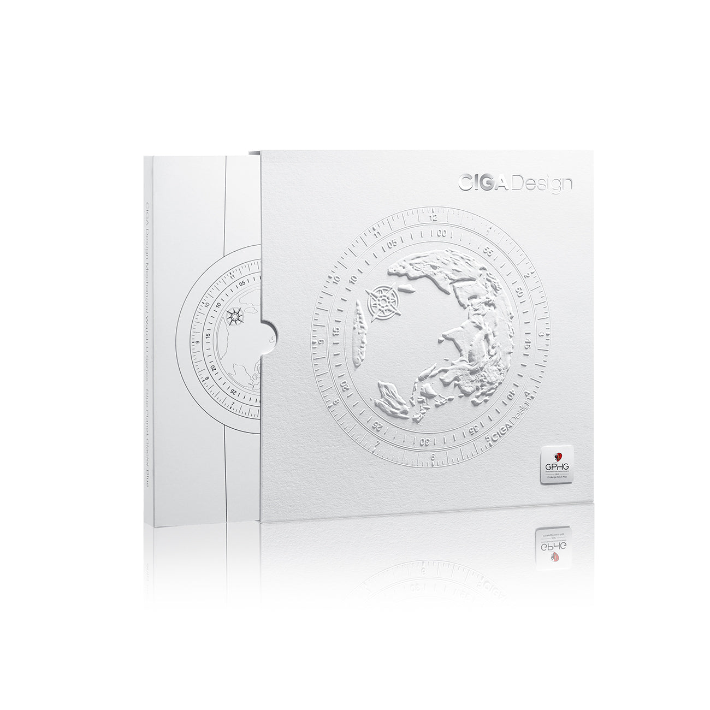

Pureza Glacial, Precisão Absoluta
O Ice Age é o membro feminino da família que conquistou o GPHG 2021 — carregando a mesma tecnologia premiada em uma expressão de pureza visual sem igual.

Cerâmica Branca — Incorruptível por Natureza
A caixa do Ice Age é fabricada em cerâmica de zircônia (ZrO₂) branca, sinterizada a 1400°C. A cor branca não é um revestimento — é a expressão cromática natural do material, resultado da pureza da composição. Isso significa que nunca amarela, nunca descasca e nunca perde a intensidade do branco, independente do contato com suor, cosméticos ou luz solar.
A dureza da cerâmica ZrO₂ supera qualquer aço convencional, enquanto o peso é significativamente menor — criando uma experiência de uso onde o relógio parece quase imaterial no pulso. A superfície polida reflete a luz de forma distinta conforme o ângulo, criando o efeito visual que deu nome ao relógio: gelo em movimento.

Asynchronous-Follow — A Tecnologia do GPHG 2021
A tecnologia Asynchronous-Follow, desenvolvida exclusivamente pela CIGA design, desacopla o ponteiro dos segundos do mecanismo convencional, criando um movimento flutuante e assíncrono sobre o mostrador. O resultado visual — cristais de gelo em queda livre — foi o que levou o Blue Planet II ao prêmio GPHG 2021 em Genebra.
O Ice Age herda esta tecnologia diretamente, operando a 28.800 semi-oscilações por hora para garantir que a dança do ponteiro seja suave e precisa. O fundo de safira transparente revela o rotor automático — a fonte de energia para a coreografia que acontece no mostrador.
Asynchronous-Follow
Tecnologia exclusiva CIGA design — ponteiro dos segundos com movimento flutuante assíncrono. A mesma inovação do GPHG 2021.
Cerâmica Branca ZrO₂
Branco permanente sinterizado a 1400°C — nunca amarela, nunca descasca, mais dura que o aço, mais leve que o titânio.
28.800 vph — Alta Frequência
Frequência de 4 Hz garante que o efeito Asynchronous-Follow seja fluido e preciso — a mecânica da coreografia.
Pulseira Cerâmica Integrada
Pulseira em cerâmica branca integrada — caixa e pulseira em uma única intenção de design e material.